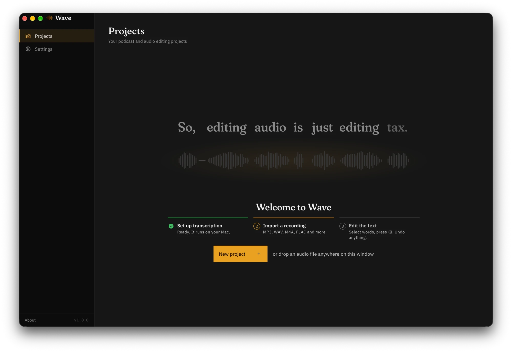

Verbatim transcription
Whisper writes what was said, “um”s and “uh”s included (English), and every word is aligned to its exact audio.
For podcasts · On your Mac
Wave transcribes your recording on your Mac. Delete a word in the transcript and it's cut from the audio. Trim the “um”s, tighten the pauses, clean up the sound, and export.

Transcription, noise removal and speaker detection all run on your Mac, on its GPU and CPU. There's no account, no cloud and no upload.
Whisper and the other models run on Apple Silicon, at several times real time.
Your recordings and transcripts stay in a folder on your Mac. Wave never sends them anywhere. If you connect an AI agent, its service sees the text it reads.
No subscription and no limits. The models download once; after that, Wave works offline.
Text for the words, a waveform for the exact trims, and the tools a podcast needs before it ships.
Whisper writes what was said, “um”s and “uh”s included (English), and every word is aligned to its exact audio.
Delete words, pauses or any stretch. Playback joins the cuts with the same short crossfade as the export, so what you hear is what you get.
Trim what the text can't, like a breath or the tail of a word, down to the millisecond.
Correct a word in place. The correction carries into every export and undoes like any edit.
Shorten long pauses to a Tight, Natural or Relaxed rhythm, or add one, filled with the room's own quiet.
Remove background noise and room echo, apply a voice EQ preset, and set the loudness for podcast delivery.
See who speaks when, for up to 8 people. Rename them, merge them, or select everything one person said.
MP3, AAC, WAV or FLAC, plus the transcript as TXT, SRT, WebVTT or JSON, all with your cuts.
Wave includes an MCP server, so an AI agent can read your transcript and make the same edits you can. The edits appear in Wave as they're made, marked with the agent's name, and ⌘Z undoes them. The agent works from the transcript, so its AI service sees that text; the audio stays on your Mac.
In Episode 12, remove the filler words and false starts, tighten the pauses, and enhance the audio.
$ claude mcp add --scope user wave -- /Applications/Wave.app/Contents/MacOS/wave mcp
Download the app, open it once through Privacy & Security, and get the speech models in Settings.
Open the DMG and drag Wave into your Applications folder.
Wave isn't notarized by Apple yet, so macOS says it can't verify it. Click Done, then open System Settings → Privacy & Security and click Open Anyway. You only do this once. Or, in Terminal:
xattr -dr com.apple.quarantine /Applications/Wave.appClick Set up transcription and download Transcription (1.6 GB). Noise removal (14 MB) and speaker detection (115 MB) are optional.
MP3, WAV, M4A, FLAC and more. Select words, press ⌫, and listen.